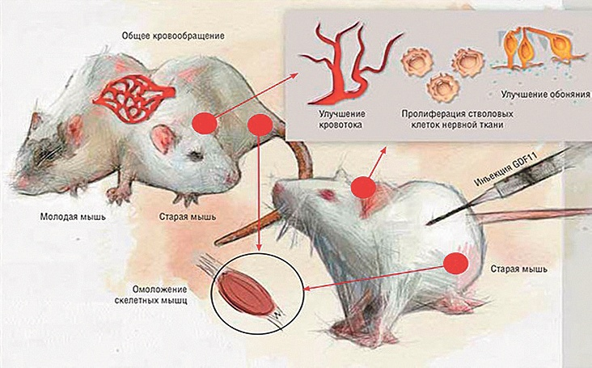

Жизненная энергия характеризуется величиной и характером ионных токов обменных процессов, которые определяют динамику тканевого электрообмена. Жизненная энергия, порождающая ионные токи, с возрастом неуклонно убывает - как следствие, происходит спад динамики тканевого электрообмена, что в результате приводит к преждевременному уходу из Плотного плана (к смерти).
Дышите глубже
Возникает законный вопрос: «Какова природа жизненной энергии и каков механизм возможности её восполнения?» При обсуждении этого вопроса следует, прежде всего, вспомнить, что и атмосферный воздух, которым мы дышим, несёт электрические заряды. Носителями атмосферного электричества являются лёгкие аэроионы.
Источниками аэроионов в Пространстве могут быть:
- космические излучения;
- излучение радиоактивных веществ;
- атмосферные электрические разряды;
- баллоэлектрический эффект при дроблении и распылении воды;
- трибоэлектрический эффект (взаимное трение частиц);
- термическая ионизация при горении и др.
Происхождение аэроионов определяется процессами, при которых внешняя (Космическая) энергия, воздействуя на атомы и молекулы элементов воздуха, выбивает отрицательно заряженный электрон с их внешней оболочки, в результате чего он становится свободным. Оставшаяся часть молекулы или атома при этом остаётся положительно заряженной. Эта положительно заряженная часть атома или молекулы и отрицательный свободный электрон соединяются с нейтральными атомами или молекулами кислорода и сообщают им свой заряд.
Таким образом, получаются положительные АИ(+) и отрицательные АИ(-) ионы, составляющие ионизированную среду. Ионизация воздуха есть одно из условий нормального развития и жизнедеятельности человека. Известно, что благотворное влияние на организм оказывают аэроионы, имеющие отрицательный знак заряда.
Молитва (Информация), исходящая от человека (№ 4, 2017 г. WWW. CHR.AIF.RU), по нашим данным, как мощный энергоинформационный посыл по аналогии с внешней Космической энергией (энергией Творца) является источником воздействия на атомы и молекулы кислорода и образования дополнительных отрицательных аэроионов. Вдыхая насыщенный после Молитвы отрицательными аэроионами воздух, человек получает дополнительный заряд энергии и информации.
Известно, что агрегация (слипание) эритроцитов происходит при потере их поверхностью заряда отрицательной полярности и приобретении ею положительного заряда, что говорит о высокой степени энтропии крови человека.
Положительный заряд
Поступающие с кислородом в кровь АИ(-) увеличивают отрицательный заряд элементов крови и плазмы, увеличивая электрический распор между ними. Таким образом, «разбег» эритроцитов из состояния «монетных столбиков» после Молитвы означает, что они вновь приобретают отрицательный заряд, и под действием кулоновских сил отталкиваются друг от друга.
Отрицательные АИ предотвращают электроразрядку клеток, обеспечивают их стабильное состояние и оптимальный уровень метаболизма.
В своих первых экспериментах 1918-1924 г. А. Л. Чижевский подметил, что систематическое вдыхание отрицательных аэроионов кислорода (АИК) замедляет старение подопытных крыс и продлевает их жизнь на 42%. В 1934 г. его ученик А. О. Войнар подтвердил этот факт и обнаружил ряд новых аргументов. Он доказал, что в ходе онтогенеза уменьшается гидрофильность коллоидов организма. Если у эмбриона человека мозг содержит около 92% воды, то у 60-летнего человека - только 80%. Уменьшается в тканях и содержание «связанной воды»: мозг эмбриона содержит 30% такой воды, а пожилого человека - лишь 20%. Данное явление, по мнению А.О. Войнар, обусловлено уменьшением сродства коллоидов тканей к воде в результате снижения величины их электрического заряда, что приводит к ухудшению тканевого электрообмена.
В связи с этим возник вопрос о поиске способа замедлить электроразрядку коллоидов и тем самым повлиять на процессы, ведущие к старению и смерти, либо попытаться найти способ зарядки коллоидов и остановить процессы старения.
Вдох на здоровье
Известно, что отрицательные АИК обеспечивают стабильное состояние клеток и предотвращают их электроразрядку, а, следовательно, коагуляцию с переходом из золя в гель. Положительные АИК уменьшают отрицательный заряд форменных элементов крови, белков плазмы и мембран всех клеток организма, что снижает устойчивость этих электростатических систем и способствует их коагуляции - изменению коллоидного состояния цитоплазмы в сторону геля, приводящему к ухудшению метаболизма.
Особенно восприимчивыми к действию отрицательных АИК являются мозг, печень и почки. Опытным путём доказано, что отрицательные АИ кислорода изменяют потенциал цельной нативной (живой) крови в отрицательную сторону. Электрический заряд коллоидов плазмы крови тоже меняется. Методом электрофореза обнаружено, что АИ кислорода увеличивают отрицательный заряд коллоидов скелетных мышц, а это говорит о существовании электрообмена между кровью и тканями.
Исходя из вышеизложенного, можно предположить, что:
- отрицательно заряженные АИК, попадая в артериальную систему, увеличивают отрицательный заряд крови;
- венозная кровь, насыщаясь СО2, в связи с чем, как известно, понижается pH, и насыщаясь продуктами метаболизма, теряет часть своего отрицательного заряда и по отношению к артериальной становится заряженной положительно. Поскольку в выдыхаемом воздухе нет отрицательных АИК, то их нет и в венозной крови.
Опытным путём показано наличие электрического заряда различной величины в крови, текущей в артериях и венах, что подтверждает разнозаряженность артериальной и венозной крови.
Величина и характер
С учётом вышеизложенного делается вывод, что артериально-венозная система (АВС), состоящая из двух разнозаряженных элементов, артериальной и венозной крови, естественно, в силу разности потенциалов обладает электрическим полем (ЭП), которое и порождает ионный ток, влияющий на ход обменных процессов в тканях.
Это значит, что избыточное вдыхание отрицательных АИК естественным образом увеличивает отрицательный заряд артериальной крови, повышая, таким образом, напряжённость ЭП АВС. Увеличение напряжённости ЭП, в свою очередь, влияет на величину и характер ионных токов обменных процессов, которые и определяют динамику тканевого электрообмена. А так как заряд АВС и напряжённость её электрического поля определяются количеством вдыхаемого АИК, то регулируя его объём, можно в некоторых пределах целенаправленно изменять и напряжённость ЭП.
В рассмотренном примере показан один из возможных механизмов заряда АВС. Есть ещё целый ряд примеров по зарядке АВС, и как результат, - омоложению системы.
Именно:
- беременность, где молодая кровь плода и заряд молодого сердца приводят к омоложению матери;
- соединение кровеносных систем молодой и старой мышей на определённое время приводит к омоложению старой мыши.

Схема передачи информации (электрообмена) в эксперименте с мышами
Формирование ЭП организмом
В первом случае артериальная кровь приобретала больший заряд за счёт наполнения АИК, в последующих же примерах формирование ЭП происходило за счёт свойства молодой крови принимать повышенный заряд от молодого зарядного устройства - сердца. Механизм образования ионных токов во всех случаях один и тот же. Только разные способы подзарядки артериальной крови.
АВС как энергетический орган по формированию ЭП работает в режиме самоподдерживающегося процесса «заряд-разряд». Его работу можно представить следующим образом. Венозная кровь, как разряженный элемент системы, поступая в лёгкие, освобождается от СО2 и обогащается кислородом. В результате этого повышается pH крови, что, как известно, увеличивает её отрицательный заряд. На выходе из сердца заряженная кровь попадает в артериальную часть АВС.
Процесс разрядки происходит в капиллярной системе при переходе жидкости с повышенным электрическим потенциалом, под воздействием фильтрационного давления (ФД), из артериальной части капилляра в окружающую ткань.
Далее, с понижением фильтрационного давления, ниже коллоидно-осмотического у венозного конца капилляра, жидкость из тканевого пространства с пониженным электрическим потенциалом и pH под воздействием реабсорбционного давления (РД) переходит обратно в кровь. И кровь становится венозной - разряженной.
Таким образом, кровь при трансформации из артериальной в венозную, за счёт обменных процессов в тканях, не только участвует в них, но и в конечном результате, понижая свой исходный электрический потенциал, разряжаясь, формирует самоподдерживающееся электрическое поле в непрерывном режиме циркуляции крови.
Энергетический ключ жизни
ЭП порождает ионный ток, в основе действий которого лежат преимущественно поляризационные явления, действующие на ткани организма, связанные с движением ионов, их разделением и изменением концентрации в клетках и других элементах тканей.
Следовательно, энергетический ключ работы организма есть ЭП АВС.
В настоящее время в нашем Холдинге НИИ «Здоровьесберегающих технологий» ставится вопрос по созданию системы, аналогичной, образно говоря, «молодой мыши». Основной задачей такой системы является восстановление электрического потенциала АВС до заданного (молодого) уровня, что позволит управляемо долго обеспечивать работу обновлённого организма, пополняя жизненную энергию из внешнего источника.
В заключение можно сказать, что для создания такой системы необходимо будет решить ряд фундаментальных задач, основными из которых являются:
- определение элементов крови, ответственных за её заряд, в разных возрастных группах;
- выработка технических требований по созданию внешнего зарядного устройства - дополнительного «сердца»;
- разработка методик применения.
При положительном решении, а мы в этом уверены, появится ещё один показатель - величина напряжённости ЭП АВС, характеризующий сугубо энергетическое состояние организма, и будет получен доступ к «энергетическому ключу времени жизни».
Костржицкий О.К.,
Маслов Л.И., доктор технических наук, профессор, академик РАЕН,
Президент Холдинга «НИИ Здоровьесберегающих технологий»